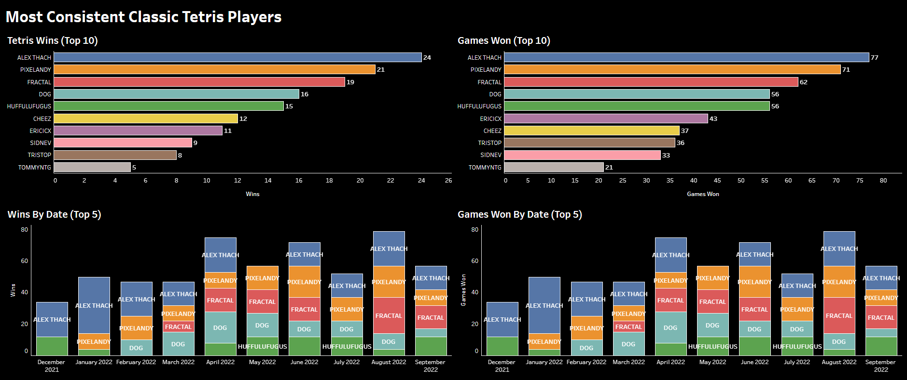
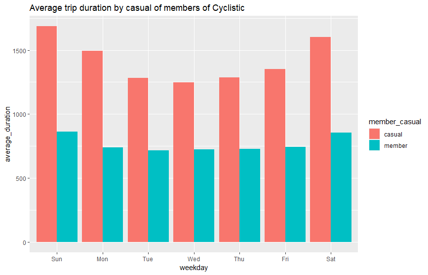

Personal Projects
Classic Tetris Analysis
I discovered competitive Classic Tetris in late 2021 and immediately got hooked.
I’ve wondered who the most consistent players are overall, and the results surprised me a bit.
Click the image or title above to explore the Jupyter Notebook with full details.

Google Data Analytics Capstone Project
The Cyclistic case study represents a fictional company using publicly available data. The given scenario is as follows:
“You are a junior data analyst working in the marketing analyst team at Cyclistic, a bike-share company in Chicago. The director of marketing believes the company’s future success depends on maximizing the number of annual memberships. Therefore, your team wants to understand how casual riders and annual members use Cyclistic bikes differently. From these insights, your team will design a new marketing strategy to convert casual riders into annual members. But first, Cyclistic executives must approve your recommendations, so they must be backed up with compelling data insights and professional data visualizations.”
Click the image or title above to explore the R Markdown file with full details.